종자기사 (2021-03-07 기출문제)
1과목: 종자생산학
1. 종자에 의하여 전염되기 쉬운 병해는?
- 흰가루병
- 모잘록병
- 배꼽썩음병
- 잿빛곰팡이병
(정답률: 74%)

2. 두 작물 간 교잡이 가장 잘 되는 것은?
- 참외 x 멜론
- 오이 x 참외
- 멜론 x 오이
- 양파 x 파
(정답률: 79%)
3. 성숙기에 얇은 과피를 가지는 것을 건과라 하는데, 건과 중 성숙기에 열개하여 종자가 밖으로 나오는 것은?
- 복숭아
- 완두
- 당근
- 밤
(정답률: 79%)
4. 배추과 작물의 채종에 대한 설명으로 옳지 않은 것은?
- 배추과 채소는 주로 인공교배를 실시한다.
- 배추과 채소의 보급품종 대부분은 1대잡종이다.
- 등숙기로부터 수확기까지는 비가 적게 내리는 지역이 좋다.
- 자연교잡을 내리는 방지하기 위한 격리재배가 필요하다.
(정답률: 65%)
5. 저장 중 종자가 발아력을 상실하는 원인으로 거리가 먼 것은?
- 수분함량의 감소
- 효소의 활력 저하
- 원형질단백의 응고
- 저장양분의 소모
(정답률: 68%)
6. 무한화서이고, 작은 화경이 없거나 있어도 매우 짧고 화경과 함께 모여 있으며, 총포라고 불리는 포엽으로 둘러싸여 있는 것은?
- 두상화서
- 단정화서
- 단집산화서
- 안목상취산화서
(정답률: 67%)
7. 다음 중 호광성 종자가 아닌 것은?
- 상추
- 우엉
- 오이
- 담배
(정답률: 65%)
8. 다음 종자 기관 중 종피가 되는 부분은?
- 주심
- 주피
- 주병
- 배낭
(정답률: 88%)
9. 시금치의 개화성과 채종에 대한 설명으로 옳은 것은?
- F1채종의 원종은 뇌수분으로 채종한다.
- 자가불화합성을 이용하여 F1 채종을 한다.
- 자웅이주(雌雄異株)로서 암꽃과 수꽃이 각각 따로 있다.
- 장일성 식물로서 유묘기 때 저온처리를 하면 개화가 억제된다.
(정답률: 69%)
10. 벼 돌연변이 육종에서 종자에 돌연변이 물질을 처리하였을 때 이 처리 당대를 무엇이라 하는가?
- P0
- M1
- Q2
- G3
(정답률: 85%)
11. 유한화서이면서, 작살나무처럼 2차지경 위에 꽃이 피는 것을 무엇이라 하는가?
- 원추화서
- 두상화서
- 복집산화서
- 유이화서
(정답률: 73%)
12. 다음 중 오이의 암꽃 발달에 가장 유리한 조건은?
- 13°C 정도의 야간저온과 8시간 정도의 단일조건
- 18°C 정도의 야간저온과 10시간 정도의 단일조건
- 27°C 정도의 주간온도와 14시간 정도의 장일조건
- 32°C 정도의 주간온도와 15시간 정도의 장일조건
(정답률: 82%)
13. 자가수정만 하는 작물로만 나열된 것은? (단, 자가수정 시 낮은 교잡률과 자식열세를 보이는 작물은 제외)
- 옥수수, 호밀
- 참외, 멜론
- 당근, 수박
- 완두, 강낭콩
(정답률: 77%)
14. 직접 발아시험을 하지 않고 배의 환원력으로 종자 발아력을 검사하는 방법은?
- X선 검사법
- 전기전도도 검사법
- 테트라졸리움 검사법
- 수분함량 측정법
(정답률: 86%)
15. 다음 중 종자의 수명이 가장 긴 종자는?
- 토마토
- 상추
- 당근
- 고추
(정답률: 76%)
16. 다음 중 종자의 모양이 방패형인 것은?
- 은행나무
- 벼
- 목화
- 양파
(정답률: 77%)
17. 다음에서 설명하는 것은?
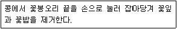
- 전영법
- 화판인발법
- 클립핑법
- 절영법
(정답률: 86%)
18. 다음 중 종자발아에 필요한 수분흡수량이 가장 많은 것은?
- 옥수수
- 벼
- 콩
- 밀
(정답률: 79%)
19. 다음 ( )에 공통으로 들어갈 내용은?
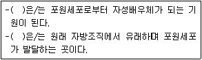
- 주공
- 에피스테이스
- 주피
- 주심
(정답률: 84%)
20. 다음 중 감자의 휴면타파법으로 가장 적절한 것은?
- α선 처리
- MH 처리
- GA 처리
- 저온저장(0~6℃)
(정답률: 78%)
2과목: 식물육종학
21. 체세포 염색채수가 20인 2배체 식물의 연관군 수는?
- 2
- 12
- 20
- 10
(정답률: 86%)
22. 다음에서 설명하는 것은?
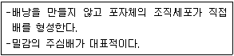
- 무포자생식
- 복상포자생식
- 부정배형성
- 위수정생식
(정답률: 77%)
23. 돌연변이육종과 관련이 가장 적은 것은?
- 감마선
- 열성변이
- 성염색체
- 염색체 이상
(정답률: 75%)
24. 다음 중 유전적으로 고정될 수 있는 분산으로 가장 적절한 것은?
- 비대립유전자 상호작용에 의한 분산
- 우성효과에 의한 분산
- 환경의 작용에 의한 분산
- 상가적 효과에 의한 분산
(정답률: 68%)
25. 배수체 작성에 쓰이는 약품 중 콜히친의 분자구조를 기초로 하여 발견된 것은?
- 아세나프텐
- 지베렐린
- 멘톨
- 헤테로옥신
(정답률: 72%)
26. 다음 중 양성화 웅예선숙에 해당하는 것으로 가장 적절한 것은?
- 목련
- 양파
- 질경이
- 배추
(정답률: 70%)
27. 배추의 일대교잡종 채종에 이용되는 유전적 성질은?
- 자가불화합성
- 웅성불임성
- 내혼약세
- 자화수분
(정답률: 79%)
28. 다음 중 두개의 다른 품종을 인공교배하기 위해 가장 우선적으로 고려해야 할 사항은?
- 도복저항성
- 수량성
- 종자탈립성
- 개화시기
(정답률: 87%)
29. 다음 중 선발의 효과가 가장 크게 기대되는 경우는?
- 유전변이가 작고, 환경변이가 클 때
- 유전변이가 크고, 환경변이가 작을 때
- 유전변이가 크고, 환경변이도 클 때
- 유전변이가 작고, 환경변이도 작을 때
(정답률: 80%)
30. 다음 중 조기검정법을 적용하여 목표 형질을 선발할 수 있는 경우는?
- 나팔꽃은 떡잎의 폭이 넓으면 꽃이 크다
- 배추는 결구가 되어야 수확한다.
- 오이는 수꽃이 많아야 암꽃도 많다.
- 고추는 서리가 올 때까지 수확하여야 수량성을 알게 된다.
(정답률: 77%)
31. 육종목표를 효율적으로 달성하기 위한 육종방법을 결정할 때 고려해야 할 사항은?
- 미래의 수요예측
- 농가의 경영규모
- 목표형질의 유전양식
- 품종보호신청 여부
(정답률: 85%)
32. 생식세포 돌연변이와 체세포 돌연변이의 예로 가장 옳은 것은?
- 생식세포 돌연변이 : 염색체의 상호전좌,
체세포 돌연변이 : 아조변이 - 생식세포 돌연변이 : 아조변이,
체세포 돌연변이 : 열성돌연변이 - 생식세포 돌연변이: 열성돌연변이,
체세포 돌연변이: 우성돌연변이 - 생식세포 돌연변이 : 우성돌연변이,
체세포 돌연변이 : 염색체의 상호전좌
(정답률: 81%)
33. 세포질적 웅성불임성에 해당하는 것은?
- 보리
- 옥수수
- 토마토
- 사탕무
(정답률: 61%)
34. 대부분의 형질이 우량한 장려품종에 내병성을 도입하고자 할 때 가장 효과적인 육종법은?
- 분리육종법
- 계통육종법
- 집단육종법
- 여교잡육종법
(정답률: 84%)
35. 아포믹시스에 대한 설명으로 옳은 것은?
- 웅성불임에 의해 종자가 만들어진다.
- 수정과정을 거치지 않고 배가 만들어져 종자를 형성한다.
- 자가불화합성에 의해 유전분리가 심하게 일어난다.
- 세포질불임에 의해 종자가 만들어진다.
(정답률: 91%)
36. 다음 중 피자식물의 성숙한 배낭에서 중복수정에 참여하여 배유를 생성하는 것은?
- 난세포
- 조세포
- 반족세포
- 극핵
(정답률: 82%)
37. 다음 중 타식성 작물의 특성으로만 나열된 것은?
- 완전화(完全花), 이형예현상
- 이형예현상, 자웅이주
- 자웅이주, 폐화수분
- 폐화수분, 완전화(完全花)
(정답률: 83%)
38. 2개의 유전자가 독립유전하는 양성잡종의 F2 분리비는?
- 9 : 3 : 1 : 1
- 9 : 3 : 3 : 1
- 3 : 1 : 1
- 9 : 1 : 1
(정답률: 88%)
39. 한 개의 유전자가 여러 가지 형질의 발현에 관여하는 현상을 무엇이라고 하는가?
- 반응규격
- 호메오스타시스
- 다면발현
- 가변성
(정답률: 92%)
40. 육종 대상 집단에서 유전양식이 비교적 간단하고 선발이 쉬운 변이는?
- 불연속 변이
- 방황 변이
- 연속 변이
- 양적 변이
(정답률: 69%)
3과목: 재배원론
41. 답전윤환의 효과로 가장 거리가 먼 것은?
- 지력증강
- 공간의 효율적 이용
- 잡초의 감소
- 기지의 회피
(정답률: 71%)
42. 엽록소 형성에 가장 효과적인 광파장은?
- 황색광 영역
- 자외선과 자색광 영역
- 녹색광 영역
- 청색광과 적색광 영역
(정답률: 83%)
43. 광합성 연구에 활용되는 방사선 동위 원소는?
- 14C
- 32P
- 42K
- 24Na
(정답률: 80%)
44. 다음 중 단일식물에 해당하는 것으로만 나열된 것은?
- 샐비어, 콩
- 양귀비, 시금치
- 양파, 상추
- 아마, 감자
(정답률: 66%)
45. 나팔꽃 대목에 고구마 순을 접목시켜 재배하는 가장 큰 목적은?
- 개화촉진
- 경엽의 수량 증대
- 내건성 증대
- 왜화재배
(정답률: 81%)
46. 작물의 냉해에 대한 설명으로 틀린 것은?
- 병해형 냉해는 단백질의 합성이 증가되어 체내에 암모니아의 축적이 적어지는 형의 냉해이다.
- 혼합형 냉해는 지연형 냉해, 장해형 냉해, 병해형 냉해가 복합적으로 발생하여 수량이 급감하는 형의 냉해이다.
- 장해형 냉해는 유수형성기부터 개화기까지, 특히 생식세포의 감수분열기에 냉온으로 불임현상이 나타나는 형의 냉해이다.
- 지연형 냉해는 생육 초기부터 출수기에 걸쳐서 여러 시기에 냉온을 만나서 출수가 지연되고, 이에 따라 등숙이 지연되어 후기의 저온으로 인하여 등숙 불량을 초래하는 형의 냉해이다.
(정답률: 78%)
47. 다음 중 굴광현상이 가장 유효한 것은?
- 440-480nm
- 490~520nm
- 560-630nm
- 650~690nm
(정답률: 73%)
48. 맥류의 수발아를 방지하기 위한 대책으로 옳은 것은?
- 수확을 지연시킨다.
- 지베렐린을 살포한다.
- 만숙종보다 조숙종을 선택한다.
- 휴면기간이 짧은 품종을 선택한다.
(정답률: 74%)
49. 다음 중 추파맥류의 춘화처리에 가장 적당한 온도와 기간은?
- 0~3℃, 약 45일
- 6~10℃, 약 60일
- 0~3℃, 약 5일
- 6~10℃, 약 15일
(정답률: 59%)
50. 작물의 내동성의 생리적 요인으로 틀린 것은?
- 원형질 수분 투과성 크면 내동성이 증대된다.
- 원형질의 점도가 낮은 것이 내동성이 크다.
- 당분 함량이 많으면 내동성이 증가한다.
- 전분 함량이 많으면 내동성이 증가한다.
(정답률: 66%)
51. 다음 중 투명 플라스틱 필름의 멀칭 효과로 가장 거리가 먼 것은?
- 지온상승
- 잡초 발생 억제
- 토양 건조 방지
- 비료의 유실 방지
(정답률: 81%)
52. 십자화과 작물의 성숙과정으로 옳은 것은?
- 녹숙 → 백숙 → 갈숙 → 고숙
- 백숙 → 녹숙 → 갈숙 → 고숙
- 녹숙 → 백숙 → 고숙 → 갈숙
- 갈숙 → 백숙 → 녹숙 → 고숙
(정답률: 76%)
53. 작물체 내에서의 생리적 또는 형태적인 균형이나 비율이 작물생육의 지표로 사용되는 것과 거리가 가장 먼 것은?
- C/N 율
- T/R 율
- G-D 균형
- 광합성-호흡
(정답률: 76%)
54. 벼에서 백화묘(白化苗)의 발생은 어떤 성분의 생성이 억제되기 때문인가?
- BA
- 카로티노이드
- ABA
- NAA
(정답률: 77%)
55. 다음 벼의 생육단계 중 한해(旱害)에 가장 강한 시기는?
- 분얼기
- 수잉기
- 출수기
- 유숙기
(정답률: 53%)
56. 토양 수분 항수로 볼 때 강우 또는 충분한 관개 후 2-3일 뒤의 수분 상태를 무엇이라 하는가?
- 최대용수량
- 초기위조점
- 포장용수량
- 영구위조점
(정답률: 83%)
57. 엽면시비의 장점으로 가장 거리가 먼 것은?
- 미량요소의 공급
- 점진적 영양회복
- 비료분의 유실방지
- 품질향상
(정답률: 74%)
58. 식물의 광합성 속도에는 이산화탄소의 농도뿐 아니라 광의 강도도 관여를 하는데, 다음 중 광이 약할 때에 일어나는 일반적인 현상으로 가장 옳은 것은?
- 이산화탄소 보상점과 포화점이 다 같이 낮아진다.
- 이산화탄소 보상점과 포화점이 다 같이 높아진다.
- 이산화탄소 보상점이 높아지고 이산화탄소 포화점은 낮아진다.
- 이산화탄소 보상점은 낮아지고 이산화탄소 포화점은 높아진다.
(정답률: 59%)
59. 기온의 일변화(변온)에 따른 식물의 생리작용에 대한 설명으로 가장 옳은 것은?
- 낮의 기온이 높으면 광합성과 합성물질의 전류가 늦어진다.
- 기온의 일변화가 어느 정도 커지면 동화물질의 축적이 많아진다.
- 낮과 밤의 기온이 함께 상승할 때 동화물질의 축적이 최대가 된다.
- 밤의 기온이 높아야 호흡소모가 적다.
(정답률: 78%)
60. 토양수분의 수주 높이가 1000 cm 일 때 pF값과 기압은 각각 얼마인가?
- pF 0, 0.001기압
- pF 1, 0.01기압
- pF 2, 0.1기압
- pF 3, 1기압
(정답률: 68%)
4과목: 식물보호학
61. 병이 반복하여 발생하는 과정 중 잠복기에 해당하는 기간은?
- 침입한 병원균이 기주에 감염되는 기간
- 전염원에서 병원균이 기주에 침입하는 기간
- 병짐이 나타나고 병원균이 생활하다 죽는 기간
- 기주에 감염된 병원균이 병징이 나타나게 할 때까지의 기간
(정답률: 90%)
62. 기주를 교대하며 작물에 피해를 입히는 병원균은?
- 향나무 녹병균
- 무 모잘록병균
- 보리 깜부기병균
- 사과나무 흰가루병균
(정답률: 80%)
63. 살충제의 교차저항성에 대한 설명으로 옳은 것은?
- 한가지 약제를 사용 후 그 약제에만 저항성이 생기는 것
- 한가지 약제를 사용 후 약리작용이 비슷한 다른 약제에 저항성이 생기는 것
- 한가지 약제를 사용 후 동일 계통의 다른 약제에는 저항성이 약해지는 것
- 한가지 약제를 사용 후 모든 다른 약제에 저항성이 생기는 것
(정답률: 83%)
64. 토양 훈증제를 이용한 토양 소독 방법에 대한 설명으로 옳지 않은 것은?
- 화학적 방제의 일종이다.
- 식물병에 선택적으로 작용한다.
- 비용이 많이 든다.
- 효과가 크다.
(정답률: 79%)
65. 비생물성 원인에 의한 병의 특징은?
- 기생성
- 비전염성
- 표징 형성
- 병원체 증식
(정답률: 81%)
66. 비기생성 선충과 비교할 때 기생성 선충만 가지고 있는 것은?
- 근육
- 신경
- 구침
- 소화기관
(정답률: 88%)
67. 유기인계 농약이 아닌 것은?
- 포레이트 입제
- 페니트로티온 유제
- 감마사이할로트린 캡슐현탁제
- 클로르피리포스메틸 유제
(정답률: 72%)
68. 계면활성제에 대한 설명으로 옳지 않은 것은?
- 약액의 표면장력을 높이는 작용을 한다.
- 대상 병해충 및 잡초에 대한 접촉효율을 높인다.
- 소수성 원자단과 친수성 원자단을 동일 분자 내에 갖고 있다.
- 물에 잘 녹지 않는 농약의 유효성분을 살포용수에 잘 분산시켜 균일한 살포 작업을 가능하게 한다.
(정답률: 68%)
69. 광발아 잡초에 해당하는 것은?
- 냉이
- 별꽃
- 쇠비름
- 광대나물
(정답률: 67%)
70. 유충기에 수확된 밤이나 밤송이 속으로 파먹어 들어가 많은 피해를 주는 해충은?
- 복숭아유리나방
- 복숭아흑진딧물
- 복숭아심식나방
- 복숭아명나방
(정답률: 61%)
71. 이화명나방에 대한 설명으로 옳은 것은?
- 유충은 잎집을 가해한 후 줄기 속으로 먹어 들어간다.
- 주로 볏짚 속에서 성충 형태로 월동한다.
- 수십 개의 알을 따로따로 하나씩 낳는다.
- 연 1회 발생한다.
(정답률: 72%)
72. 직접 살포하는 농약 제재인 것은?
- 수용제
- 유제
- 입제
- 수화제
(정답률: 79%)
73. 방동사니과 잡초로만 올바르게 나열한 것은?
- 매자기, 바늘골
- 올방개, 자귀풀
- 뚝새풍, 올챙이고랭이
- 사마귀풀, 너도방동사니
(정답률: 54%)
74. 잡초의 발생시기에 따른 분류로 옳은 것은?
- 봄형 잡초
- 2년형 잡초
- 여름형 잡초
- 가을형 잡초
(정답률: 72%)
75. 접촉형 제초제에 대한 설명으로 옳지 않은 것은?
- 시마진, PCP 등이 있다.
- 효과가 곧바로 나타난다.
- 주로 발아 후의 잡초를 제거하는 데 사용된다.
- 약제가 부착된 세포가 파괴되는 살초효과를 보인다.
(정답률: 71%)
76. 알 → 약충 → 성층으로 변화하는 곤충 중에 약충과 성충의 모양이 완전히 다르고, 주로 잠자리목과 하루살이목에서 볼 수 있는 변태의 형태는?
- 반변태
- 과변태
- 무변태
- 완전변태
(정답률: 62%)
77. 곤충의 피부를 구성하는 부분이 아닌 것은?
- 큐티클
- 기저막
- 융기
- 표피세포
(정답률: 80%)
78. 곤충의 배설태인 요산을 합성하는 장소는?
- 지방체
- 알라타체
- 편도세포
- 앞가슴샘
(정답률: 59%)
79. 고추, 담배, 땅콩 등의 작물을 재배할 때 많이 사용되는 방법으로 잡초의 방제 뿐만 아니라 수분을 유지시켜 주는 장점을 지닌 방법은?
- 추경
- 중경
- 담수
- 피복
(정답률: 70%)
80. 다음 설명에 해당하는 것은?
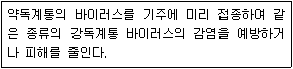
- 파지
- 교차보호
- 기주교대
- 효소결합
(정답률: 79%)
5과목: 종자관련법규
81. 식물신품종 보호법상 품종보호권의 설정등록을 받으려는 자나 품종보호권자는 품종보호료 납부기간이 지난 후에도 얼마 이내에는 품종보호료를 납부할 수 있는가?
- 1개월
- 2개월
- 4개월
- 6개월
(정답률: 79%)
82. 식물신품종 보호법상 품종명칭등록 이의신청을 한 자는 품종명칭등록 이의신청기간이 지난 후 얼마 이내에 품종명칭등록 이의신청서에 적은 이유 또는 증거를 보정할 수 있는가?
- 10일
- 20일
- 30일
- 50일
(정답률: 87%)
83. 종자산업법에 대한 내용이다. ( )에 알맞은 내용은?
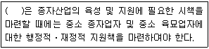
- 농업실용화기술원장
- 농림축산식품부장관
- 국립종자원장
- 농촌진흥청장
(정답률: 70%)
84. 보증서를 거짓으로 발급한 종자관리사의 벌칙은?
- 2년 이하의 징역 또는 1천만원 이하의 벌금
- 1년 이하의 징역 또는 1천만원 이하의 벌금
- 1년 이하의 징역 또는 5백만원 이하의 벌금
- 6개월 이하의 징역 또는 3백만원 이하의 벌금
(정답률: 88%)
85. 종자산업법상 작물의 정의로 옳은 것은?
- 농산물 또는 임산물의 생산을 위하여 재배되는 모든 식물을 말한다.
- 농산물 중 생산을 위하여 재배되는 일부 식용 식물을 말한다.
- 농산물 중 생산을 위하여 재배되는 기형 식물을 말한다.
- 임산물의 생산을 위하여 재배되는 돌연변이 식물을 제외한 식용 식물을 말한다.
(정답률: 85%)
86. ( )에 알맞은 내용은?
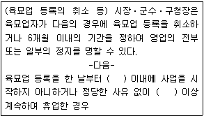
- 1년
- 9개월
- 6개월
- 3개월
(정답률: 84%)
87. 식물신품종 보호법상 신규성에 대한 내용이다. ( )에 알맞은 내용은?
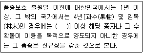
- 6년
- 3년
- 2년
- 1년
(정답률: 70%)
88. 품종보호를 받지 아니하거나 품종보호 출원 중이 아닌 품종의 종자의 용기나 포장에 품종보호를 받았다는 표시 또는 품종보호 출원 중이라는 표시를 하거나 이와 혼동되기 쉬운 표시를 하는 행위 자의 벌금은?
- 1천만원 이하의 벌금
- 3천만원 이하의 벌금
- 5천만원 이하의 벌금
- 1억원 이하의 벌금
(정답률: 40%)
89. 식물신품종 보호법상 해양수산부장관은 품종보호 출원의 포기, 무효, 취하 또는 거절결정이 있거나 품종보호권이 소멸한 날부터 얼마간 해당 품종보호 출원 또는 품종보호권에 관한 서류를 보관하여야 하는가?
- 3년
- 5년
- 7년
- 10년
(정답률: 52%)
90. 종자관리요강상 사후관리시험의 기준 및 방법에 대한 내용이다. ( )에 알맞은 내용은?
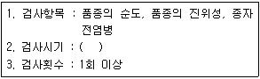
- 수잉기
- 유효분얼기
- 감수분열기
- 성숙기
(정답률: 58%)
91. 종자관리요강상 포장검사 및 종자검사의 검사기준에서 밀 포장검사 시 전작물 조건으로 옳은 것은? (단, 경종적 방법에 의하여 혼종의 우려가 없도록 담수처리·객토·비닐멸칭을 하였거나, 이전 재배품종이 당해 포장검사를 받는 품종과 동일한 경우의 사항은 제외한다.)
- 품종의 순도유지를 위해 6개월 이상 윤작을 하여야 한다.
- 품종의 순도유지를 위해 1년 이상 윤작을 하여야 한다.
- 품종의 순도유지를 위해 2년 이상 윤작을 하여야 한다.
- 품종의 순도유지를 위해 3년 이상 윤작을 하여야 한다.
(정답률: 64%)
92. 종자관리요강상 사진의 제출규격에서 사진의 크기는?
- 6" x 12" 의 크기이어야 하며, 실물을 식별할 수 있어야 한다.
- 5" x 9" 의 크기이어야 하며, 실물을 식별할 수 있어야 한다.
- 4" x 5" 의 크기이어야 하며, 실물을 식별할 수 있어야 한다.
- 2" x 6" 의 크기이어야 하며, 실물을 식별할 수 있어야 한다.
(정답률: 83%)
93. 유통 종자 또는 묘의 품질표시를 하지 아니하거나 거짓으로 표시하여 종자 또는 묘를 판매하거나 보급한 자의 과태료는?
- 1백만원 이하의 과태료
- 3백만원 이하의 과태료
- 5백만원 이하의 과태료
- 1천만원 이하의 과태료
(정답률: 79%)
94. 종자관리요강상 수입적응성시험의 대상작물 및 실시기관에 대한 내용이다. ( )에 알맞은 내용은?
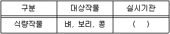
- 한국종자협회
- 농업기술실용화재단
- 한국종균생산협회
- 국립산림품종관리센터
(정답률: 67%)
95. 종자검사요령 상 포장검사 병주 판정기준에서 벼의 특정병은?
- 깨씨무늬병
- 잎도열병
- 키다리병
- 줄무늬잎마름병
(정답률: 74%)
96. 종자검사요령상 시료추출에서 귀리 순도검사 시 시료의 최소 중량은?
- 80g
- 120g
- 200g
- 400g
(정답률: 65%)
97. 종자검사요령상 수분의 측정의 분석용 저울에 대한 내용이다. ( )에 알맞은 내용은?
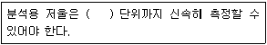
- 1g
- 0.1g
- 0.01g
- 0.001g
(정답률: 77%)
98. 종자산업법상 품종목록 등재의 유효기간 연장신청은 그 품종목록 등재의 유효기간이 끝나기 전 얼마 이내에 신청하여야 하는가?
- 6개월
- 1년
- 2년
- 3년
(정답률: 73%)
99. 품종보호권 또는 전용실시권을 침해한 자의 벌칙은?
- 1년 이하의 징역 또는 1천만원 이하의 벌금
- 3년 이하의 징역 또는 3천만원 이하의 벌금
- 5년 이하의 징역 또는 5천만원 이하의 벌금
- 7년 이하의 징역 또는 1억원 이하의 벌금
(정답률: 78%)
100. 종자검사요령상 과수 바이러스⋅바이로이드 검정방법에 대한 내용이다. (가), (나)에 알맞은 내용은?
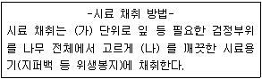
- (가) : 4주, (나) : 2개
- (가) : 3주, (나) : 8개
- (가) : 2주, (나) : 3개
- (가) : 1주, (나) : 5개
(정답률: 66%)